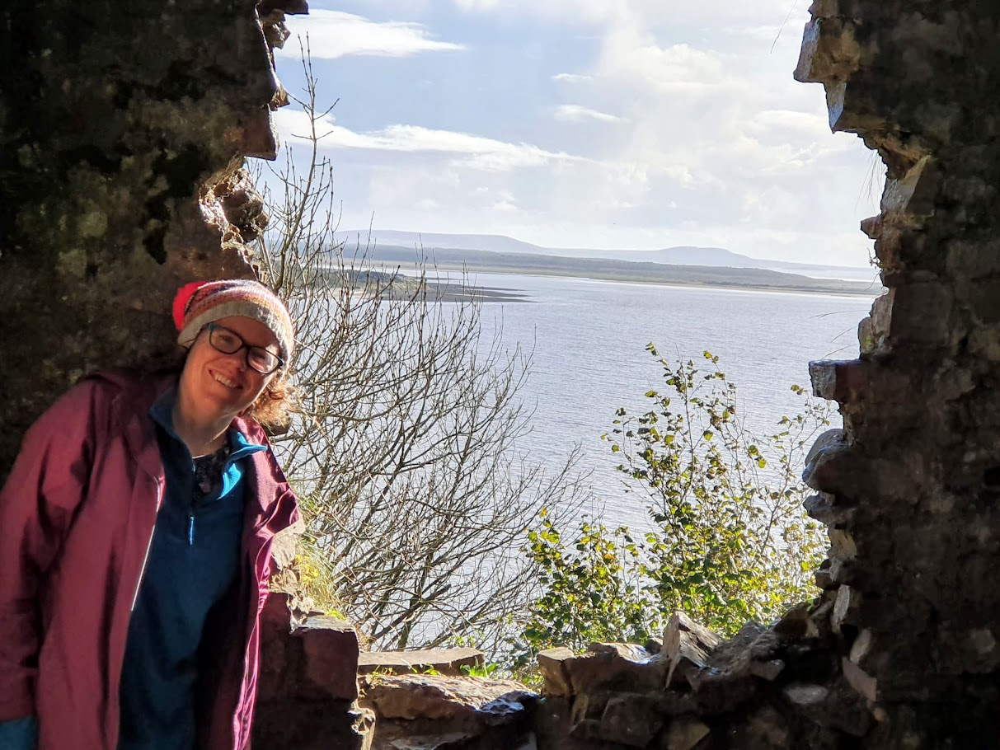

Dr Maire Gorman
About
I am orginally from Aberdeen and grew up near Glasgow. I am a teaching-focussed lecturer in physics with a background in astrochemistry.

Appointments
| Dates | Title | Department | University |
|---|---|---|---|
| June 2024 - | Lecturer | Department of Physics | Sussex University |
| Sept 2022 – May 2024 | Lecturer in Physics Education | School of Physics | Bristol University |
| July 2020 – Aug 2022 | Lecturer in Planetary Physics (0.67 FTE) | Department of Physics | Aberystwyth University |
| Aug 2019 – Aug 2022 | Lecturer (0.33 FTE) | Graduate School | Aberystwyth University |
| Jan 2016 – June 2020 | Teaching Fellow/ Associate Lecturer | Department of Physics | Aberystwyth University |
| Oct 2012 – Dec 2015 | Demonstrator | Department of Physics | University College London |
Education
PGCTHE from Aberystwyth University and Fellow of Higher Education Academy
Action research projects on
- Use of tablets for lecturing mathematical methods
- Study skills and fixed/growth mindsets within physics students.
PhD, ExoMol Group, Department of Physics, University College London, 2012-2016
- Calculation of linelists for Chromium Hydride (CrH) & Manganese Hydride (MnH)
- Supervisors: Professor Sergey N. Yurchenko & Professor Jonathan Tennyson
- Tutor on two placements for “The Brilliant Club” teaching KS2 mathematics (Autumn 2015).
- Experience tutoring individual A-level students (London Science Tutors).
- Demonstrating on 3rd year practical astronomy course, “Certificate in Astronomy” course (open to adult learners) and year 1 laboratory classes.
MPhys, University of Oxford, 2.1, 2008-2012
- Year 4 project: Monte Carlo Simulation of X-ray spectra from Black Hole Winds
- Year 4 Major Options: Astrophysics, Physics of Atmospheres & Oceans
- 2nd year option on “Teaching Physics in schools”.
Teaching
Teaching modules taught
I have experience teaching both fundamental and specialist physics units at all undergraduate levels (Y0 to Y4) and hence can highlight and contextualise progressions in thinking which students undergo as progress in degree programme.
Modules taught at Bristol University (2022 – 2024)
| Year | Module name | Students | Credits | Lectures | WS | Assessment |
|---|---|---|---|---|---|---|
| 1 | Core Physics I, Properties of Matter | 229 | 10/40 | 15 | 6 | E/C |
| 1 | Core Physics II, Nuclear & Particle | 239 | 4/20 | 4 | 2 | E/C |
| 2 | Practical Physics (Year 2 laboratory) | 82 | NA | 0 | 48 | C |
| 2 | Programming & Data Analyss for Scientists | 4 | 3/20 | 0 | 3 | 6 |
| 3 | Advanced Data Science & Machine Learning for Scientific Computing | 21 | 6/20 | 6 | 12 | C |
| M | Fundamentals of Nuclear science | 14 | 10 | 15 | 3 | E/C |
WS = Workshop hours in which have assisted and mentored demonstrators as appropriate. C = Coursework E/C = Exam and coursework
Modules taught at Aberystwyth University
Year Module name Students Credits Lectures WS Assessment 0 Laboratory Physics 30 - 45 20 0 40 C 0 Oscillations & Waves 30 - 45 6/10 6 6 E/C 1 Forces & Energy 60 - 80 6/20 9 20 E/C 2 Research Skills 60 - 80 20 0 24 C 2 Mathematical Physics 80 - 150 10/20 10 20 E/C 2 Planets 30 - 60 5/10 10 0 E/C 3 Planetary Atmospheres 10 – 30 7/10 14 0 E/C 3 Particles, Quanta and Fields 60 – 80 6/20 12 0 E/C 3 Numerical Methods 60 - 80 3/10 3 20 C 4 Adv. Num. methods 15 - 30 2/10 0 20 C 4 Adv. Research Topics (Workshop on Black holes) 10 - 15 4 3 3 C PGT Quantitative Methods (Social Science & International DProf students) 150 in total (9 cohorts) 10 12 24 C
Personal tutoring
Since September 2016, I have acted as personal tutor to 10 – 27 tutees per academic year. I am submitting portfolio to be a “Recognised Practitioner in Advising” as part of the UKAT framework.
I was part of University-wide working group looking at embedding wellbeing in the curriculum as part of the Aberystwyth University APEX strategy.
Curriculum Review and development
Year 1 core physics director (40 credits): I am overseeing the work of multiple lecturers, demonstrators and workshop leads in rolling out this new module which has been designed to align to new IOP accreditation.
MSc Nuclear Science and Engineering MSc steering group committee member: I have introduced research & study skills sessions and personal tutoring framework to this scheme and am involved in re-accreditation application (spring 2024).
Curriculum Review Group Member (September 2022 – present)
Contributed to Aberystwyth astrophysics education review – suggestions for structural changes across astrophysics and planetary science modules were implemented.
Introduced machine learning into physics curriculum at Aberystwyth University.
Working group member, design of new PGT MSc programme in Radio Spectrum Engineering (2020)
I initiated and lead a cross-departmental group to review the bespoke “Space Science and Robotics” degree scheme with structural changes then after implemented (2018).
Published Education journal articles
- Dunnett, K., Gorman, M. N., and Bartlett, P. A (2019). “Assessing 1st year undergraduate physics students’ laboratory practices: Seeking to encourage research behaviours”, European Journal of Physics Education, 40(1).
- Sousa-Silva, C., McKemmish, L. K., Chubb, K. L., Gorman, M. N., Baker, J. S., Barton,E. J., Rivlin, T. and Tennyson, J. (2017). “Original Research By Young Twinkle Students (ORBYTS): when can students start performing original research?”, Physics Education, 53(1).
- McKemmish, L. K., Chubb, K. L., Rivlin, T., Baker, J. S., Gorman, M. N., Heward, A., Dunn, W. and Tessenyi, M. (2017). “Bringing pupils into the ORBYTS of research”, Astronomy & Geophysics, 58(5).
Teaching presentations
- “Physics meets (Scientific) computing”, IOP Wales Annual Teachers’ conference, October 2023.
- “Using Mentimeter in reverse gear to explain statistical and physics modelling concepts”, Open University, School of Physical Sciences seminar series, September 2022.
- “Training and assessing students in seeing “the big picture” in complex mathematical processes and linking to employability scenarios”, Horizons in STEM Higher Education Conference, Swansea, June 2023.
- “Statistics and social sciences students: building confidence, camaraderie and appreciation of relevance of statistics through inter and intra-cohort Mentimeter activities”, Bristol Institute for Learning & Teaching Annual Conference, Bristol, July 2023.
- “Introducing machine-learning concepts into the physics Curriculum”, Variety in Chemistry Education/Physics Higher Education (ViCEPHE), online, August 2022.
- “Developing student skills and understanding of how science works through the study of exoplanets”, IOP event “Stars by the Sea - in-person event for teachers, PGCE/University students”, Aberystwyth, 2022 & IOP Wales teacher conference (September 2022).
- “Inter & Intra-cohort bonding (and peer learning) in statistics teaching”, Aberystwyth University mini-conference on Polling software, 2021.
- “Roundtable discussion of PGR research module provision and mental health”, Aberystwyth University, Teaching Show & Tell (Faculty of Business & Physical Sciences), 2021
- “You can do statistics! Challenging students mindset and preconceived perception of statistics through a multi-pronged approach”, Aberystwyth University T & L conference 2021.
- “Using Mentimeter to explain (physics) modelling concepts”, Aberystwyth University T & L conference 2020.
- “Study skills knowledge and the growth mindset in Physics first and second year students”, Aberystwyth University, Teaching Show & Tell (Faculty of Business & Physical Sciences), 2019.
- “Generation of molecular line lists: involving A-level & undergraduate students in research”, Astrochemistry for all, University of Sheffield, 2018.
- “Using Media to engage school students in research”, Aberystwyth University T & L conference 2017.
- “Brilliant Club: Teaching Opportunities for PhD and Post Docs”, Aberystwyth University T & L conference 2017, 2018, 2019.
- “The Brilliant Club: raising the aspirations of school pupils through bespoke research-based tutorials”, Aberystwyth University T & L conference 2016.
Contributions to student and staff CPD
Assessor & mentor for Bristol HEA fellowship scheme
Development and delivery of 4 x 3 hour in-person workshops for PGRs in physics who teach (Spring 2023) aligned to AFHEA descriptors.
Development and delivery of 6 x 1.5 (2020, 2021) hour sessions (student mindset/mental health considerations, use of storytelling & analogies, polling software) for staff and PGs who teach (all disciplines, Aberystwyth University).
I convened a programme of 12 x 1 hour sessions on PGR supervision aligned to the UKCGE Good Supervisory Practice Framework which ran over 2020-2021.
Between 2018 and 2022 I volunteered as a CodeFirst tutor for in-person evening coding classes for female/non-binary students.
Invited talk (2021) on astrochemistry at the UKRI funded summer school for new PGR students in astrophysics in the UK held at Hull University.
Physics Education activities
Physics Education Group lead, University of Bristol, June 2023 – present
I am working with Dr Charanjit Kaur at Manchester university on a cross-institution study to investigate the affect of physics students pre-university experiences of coding on their attainment, attitudes and expectations of coding at degree level.
I have participated in a research study run by Astra Sword (PhD student, Open University) on creating models of factors which affect student attainment in physics.
Collegiality
Widening participation
During the summers of 2016, 2017 and 2018 I developed and taught 12 hours of material to cohorts of between 8 and 12 AS-level students to develop their physics-specific academic skills as part of widening participation summer school hosted by Aberystwyth University.
I have lectured as part of the SusNet and Further Maths Network projects ran at Aberystwyth University.
Through my own initiative and working with relevant stakeholders, I was responsible for Aberystwyth University signing a formal partnership with “The Brilliant Club” which is an educational charity that places PG researchers into schools for which I had worked as a tutor.
I have trialled the use of Panopto videos, email and Skype in involving A-level students based at St Brendan’s college in Bristol in molecular spectroscopy projects as part of the award-winning EduTwinkle/ORBYTS programme.
Public engagement
I have given Planetarium shows and talks on exoplanets and solar physics for various societies including Aberystwyth Science Cafe, West Wales Association of Young Scientists, Newtown Astronomy Society, Cardiff Astronomical Society and have a TEDx talk (2018).
Reviewer for Ingenious public engagement awards (Royal Academy of Engineering) in 2018, 2019 and 2020.
EDI committee work
Interim chair of physics EDI committee, Aberystwyth University (Sabbatical cover, March – September 2018)
Member & Chair of student sub-committee, School of Physics, Bristol University September 2022 – present
Research
ORCID: 0000-0002-8437-1284
For up-to-date list of publications see here: https://scholar.google.com/citations?user=EGW5mmsAAAAJ&hl=en
I am a member of the ExoMol research group (based at UCL) which is the world-leader in providing the necessary computed molecular data needed for the exoplanet community to detect molecules in exoplanet atmospheres.
I work with international collaborators and, in additional to the lead-author journal article listed below, I have acted as co-author for 7 published refereed journal articles. I have presented talks at national level (2017, 2018, 2022) and international level (2014) and posters at national level for an additional 8 other distinct projects. I am currently writing an invited book chapter (30 pages, 15k words, Elsevier) for “Handbook of Astrochemistry” on Theoretical Molecular Spectroscopy (publication due 2025).
I organised a lunchtime session at NAM (July 2019) on “Exoplanet magnetism” which brought together experts in this emerging discipline and was sponsored by Europlanet
Research Grants
June 2021, Aberystwyth University Internal Research fund, Diatomic molecules in sunspots, £10k, 3 months funding for PDRA salary with me acting as supervisor/PI.
September 2021, Joy Welch Research Fund, Identification of molecular species as probes of sunspot magnetic field strength, £6,363.34, 2 months funding for PDRA salary with me acting as supervisor/PI.
Postgraduate supervision
I am primary (sole) supervisor for Shaun Donnelly (Jan 2020 – Jan 2024) who is now a Research Associate (July 2023 – present) at Sheffield University in quantum chemistry. At Aberystwyth there are no academics working in this research area.
I acted as second (pastoral) supervisor to Dr Llyr Humphries who is now a Research associate at Aberystwyth within the solar research group.
Postgraduate internal examining (Theoretical/Coding/Simulation based)
- Richard Grimes, Sunspot Group Analysis: A Multi-Layer Thresholding Approach
- Chloe Sumner, Evolution of magnetic twists on prominence threads
Undergraduate Student project supervision
Nuffield A-level students (6 students) and work experience programme (2017, 2018, 2019).
2nd year group projects (PH25520/PH25720) spanning solar physics and development of 5 new astrophysics projects which utilise open-source databases (supernova, brown dwarf, white dwarf, pulsars, mass-luminosity relation).
UG departmental summer and January AberForward placements spanning molecular spectroscopy, education and outreach (15 students).
BSc paired projects (27 students) and individual MPhys projects (8 students) for projects spanning molecular spectroscopy, exoplanet transits, dynamics, atmospheres and education. This work has involved developing new projects which utilise open-source data and codes.